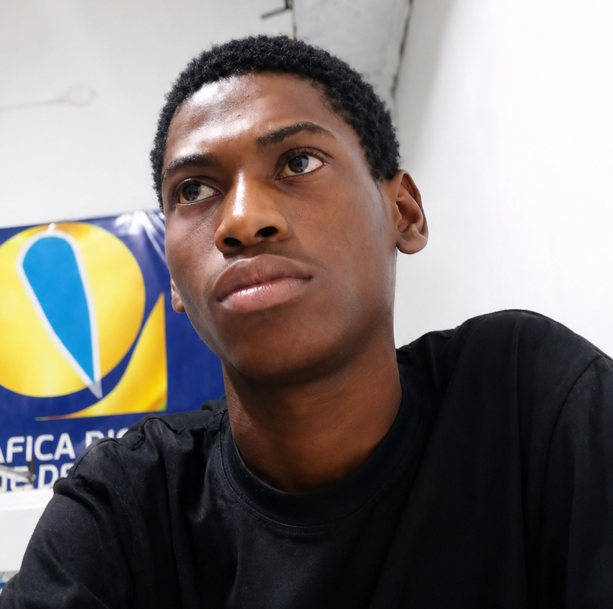

Olá, sou o Bernardo Lelo
Sou estudante de programação, com foco em desenvolvimento web e aprendizagem contínua.
Sou Bernardo, desenvolvedor de software e moro em Luanda, Angola. Transformo requisitos de produto em experiências web refinadas e me preocupo com a engenharia por trás delas: APIs, dados, integrações e design sustentável. Estudo no instituto de Telecomunicações e desenvolvo meus próprios produtos nas horas vagas.
Angola-LuandaCada linha de código é uma oportunidade de criar algo novo.
Cada linha de código é uma oportunidade de aprender, experimentar e criar.
Alguns trabalhos meus que fui desenvolvendo durante o meu aprendizado
Uma selecção de projectos e experiências que desenvolvo enquanto aprofundo os meus conhecimentos em programação e tecnologia.
Lelox
Em desenvolvimentoA Lelox é o meu projecto na área da tecnologia, dedicado ao desenvolvimento de sites, lojas online e plataformas digitais, além de serviços de marketing digital. O nosso objectivo é ajudar pessoas e empresas a fortalecer a sua presença online, dar visibilidade aos seus negócios e transformar ideias em soluções digitais.
#tecnologia
#VendaMarketing
#GestaoDeProjetos
#Quarteto
LeloPint+
Em desenvolvimentoSou Bernardo, desenvolvedor de software e moro em Luanda, Angola. Transformo requisitos de produto em experiências web refinadas e me preocupo com a engenharia por trás delas: APIs, dados, integrações e design sustentável. Estudo no instituto de Telecomunicações e desenvolvo meus próprios produtos nas horas vagas.
#tecnologia
#VendaMarketing
#GestaoDeProjetos
Portfólio
DesenvolvidoSou Bernardo, desenvolvedor de software e moro em Luanda, Angola. Transformo requisitos de produto em experiências web refinadas e me preocupo com a engenharia por trás delas: APIs, dados, integrações e design sustentável. Estudo no instituto de Telecomunicações e desenvolvo meus próprios produtos nas horas vagas.
#tecnologia
#VendaMarketing
#GestaoDeProjetos
Tecnologias que estou a aprender
Não me considero programador nem desenvolvedor web. Estou apenas no processo de aprendizagem, a adquirir conhecimentos e a evoluir na área da programação.
Html
EstruturaUso ela para marcar os elementos conhecidos por tags, uma boa opção recomendo para quem quer começar como eu na programação. Uma forma mais famosa ela é conhecida como o responsável por dar estrutura a uma página.
Css
EstilizaçãoUtilizo CSS para dar vida às páginas, trabalhar cores, tamanhos, espaçamentos e layouts, criando interfaces mais organizadas, atractivas e adaptáveis a diferentes ecrãs.
JavaScript
InteratividadeEstou a aprender JavaScript para tornar os sites mais dinâmicos e interactivos, permitindo criar funcionalidades, responder às acções dos utilizadores e melhorar a experiência de navegação.
Internet
Explorar maisA internet é a base da comunicação digital. Estou a aprofundar os meus conhecimentos sobre o seu funcionamento, a navegação web e a forma como os sites e serviços online se conectam.
Quem vai tratar da sua empresa no futuro?
Sou eu Bernardo Lelo
Sou estudante de programação, dedicado a desenvolver os meus conhecimentos e a preparar o meu futuro na área da tecnologia. Acredito que cada projecto é uma oportunidade de aprender, evoluir e transformar ideias em soluções digitais.
O meu objectivo é desenvolver sites, lojas online, plataformas e aplicações que possam facilitar processos, fortalecer marcas e contribuir para o crescimento dos negócios.
Perguntas frequentes sobre o Bernardo Lelo.
Quem é o Bernardo?
Bernardo é um jovem com o sonho, disciplina, foco naquilo que quero alcançar, acho que ja tens noção de que é o Bernardo, mas te convido a conviver comigo ai vais entender com factos reais sem ninguém te contar
Qual é o teu maior objetivo?
O meu maior objetivo! chegar até ao Dr. Adilson Camacho, mas com trabalho feito.
Qual é o teu maior sonho?
Está é uma pergunta pesada, não goste de falar tudo sobre mim, mas está pergunta vou responder.
O meu maior sonho é ter um banco nacional, estou a me preparar para isso.
Por que escolheste a área de tecnologia?
Eu gosto da tecnologia, desde o meu primeiro contacto com ela fiquei totalmente apaixonada por ela e continuo a explorar ela.
Qunatos anos tem o Bernardo?
Tenho 16 anos de idade.
Bernardo Lelo
• 2026—Evolução—Tecnologia—Marketing